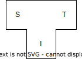

# history
# background
The ghūl compiler (opens new window) is a self-hosting compiler (opens new window): it can compile itself from its own source code. Developing the self-hosting ghūl compiler required an initial bootstrap (opens new window). Bootstrapping a new compiler for a new language is a classic chicken-and-egg problem: you need a compiler to compile your new compiler, but that compiler doesn’t exist yet.
The solution is to write the initial compiler in an existing language. Once that compiler is sufficiently reliable, its source code must be somehow translated into the new language. This results in a compiler that can compile the new language including its own source code.
The discussions on bootstrapping use tombstone diagrams (opens new window). In a T shaped tombstone diagram, the T represents a particular version of a compiler. Within the T, three languages are named: the source language, the target language and the implementation language. The target language is typically some kind of IL or machine language, but for a transpiler the target language is source code.
For example a compiler C that reads source in language S, translates it to language T, and is implemented in language I, would be depicted like this:

To use compiler C, we need a compiler for source language I, and a machine to execute target code T. Provided we have those, we can compile C with the compiler for I, and when we run the resulting executable, it will consume source code written in S, and produce target code that will execute on T. If the compiler for I won't run on the machine that executes T, then compiler C is a cross compiler (opens new window)
#
I wrote the first version of the ghūl compiler in the L programming language - a language I designed and implemented a self-hosting compiler for previously.
Getting to this point required bootstrapping (opens new window) the compiler: bootstrapping is the process of getting
Bootstrapping it now is routine: it's done by the CI/CD pipeline on every PR merge and release. However, the initial bootstrap was much more complex.
The initial bootstrap of a self-hosting compiler for a new programming language is a complex and challenging task due to the paradoxical nature of the process: the compiler, which translates code written in the new language into executable machine code, needs to be written in the new language it's supposed to compile, but no compiler exists that can compile it. This creates a "chicken-and-egg" problem where the first version of the compiler must be written in a different, already established language. Bootstrapping is the process of taking this initial non-self-hosting compiler and somehow translating it into a new compiler written in the new language and capable of compiling itself.
The initial bootstrap of ghūl involved several stages and I'll cover it in detail below.
# bootstrapping the L compiler
The original basis for the compiler was written many years ago. I was a compiler for a language quite different from ghūl - a language I called L. This L compiler was originally written in C++, and compiled the L language to x64 assembly language. I manually bootstrapped the L compiler by hand translating its C++ source code into L. This was made easier (if no less tedious) by carefully sticking to an L-compatible subset of C++ when writing the L compiler.

# bootstrapping the ghūl compiler
The first version of the ghūl compiler was written in a language named L. L was a language I designed a
# L to L transpiler written in L
A few years later, when I decided to design the ghūl programming language, I needed a new compiler. I wrote this first version of the ghūl compiler in L. Initially, this compiler was a simple source-level L to L transpiler, and did not understand the ghūl language at all:

As this simple 'ghūl compiler' performing no semantic analysis and generated L source code as its 'object code', it relied on the L compiler for semantic error detection and reporting and for x64 code generation.
The combination of this L to L transpiler plus the self hosting L compiler was an L compiler that produced x64 executables with an intermediate step of transpiled L as an intermediate language.

Note we are running the transpiler and the compiler together in sequence as if the combination of the two was a single compiler. The input language of the transpiler is translated into the output language of the compiler. This is not yet bootstrapping, so we're not nesting the tombstone diagrams together as we would for a bootstrap.
This L-to-L transpiler was temporary scaffolding to support bootstrapping the ghūl compiler. It could in principle have been written any language with a compiler for the target architecture, but since I wrote the L compiler, choosing L meant I could make changes to the L language and compiler if needed to support the ghūl bootstrap.
The reason the initial transpiler translated L to L is that I needed it to be able to transpile itself, and to produce a language that a compiler already existed for. The plan being to use the transpiler to bootstrap itself from an existing language to the new language ghūl by re-writing its own source code in ghūl. I couldn't start with a transpiler written in ghūl, as no compiler would be able to compile it. Nor would there be any point in having the transpiler emit ghūl as again, no compiler would be able to compile this output. Once the transpiler was up and running, it could be modified to support ghūl input and output.
# ghūl to L transpiler written in L
I then enhanced this L to L transpiler so it could transpile L to ghūl and ghūl to L. Both versions of this transpiler were still written in L and still relied on the L compiler as a backend to generate the x64 executable from transpiled the L code.

# transpiler bootstrap
I passed the L source code of the ghūl to L transpiler through the L to ghūl transpiler, generating output in ghūl. This yielded a ghūl to L transpiler written in ghūl

This step is the first bootstrap: the source code of the ghūl to L transpiler that was L, has been transformed into ghūl, and so it can now transpile itself.
I enhanced the ghūl to L transpiler so it called the L compiler automatically, and this combination of ghūl to L transpiler followed by the self hosting L compiler became the self-hosting ghūl language compiler front end.

However, this early version of the ghūl compiler was very crude and still depended on the L compiler for semantic analysis, error checking, and code generation.
# bootstrapping from L backend to .NET backend
Gradually, I integrated more semantic analysis into the ghūl compiler. This addition included representations of classes, traits, methods, functions, variables, etc., along with corresponding error checking and reporting.
With the compiler now capable of constructing a detailed representation of input programs, I added a .NET IL generation backend. I maintained the L source code backend alongside the .NET IL backend until the .NET IL backend was sufficiently complete and stable to self-host the compiler on .NET. This phase was awkward due to L's LLVM backend and its standard library, with features like generic collections and file handling, which interfaced with glibc and were not source compatible with similar facilities in .NET. I solved this by building a small subset of the .NET standard library in L, and then porting references to the L standard library in the ghūl compiler to use this .NET library subset, thus enabling the compiler to be built on and target both L and .NET.
Finally, with the compiler reliably self-hosting on .NET, I removed the L transpilation backend and the .NET library subset, and the compiler was successfully bootstrapped onto .NET.
You can see this process in the Git history in the ghūl compiler repo, going all the way back to the initial commit.